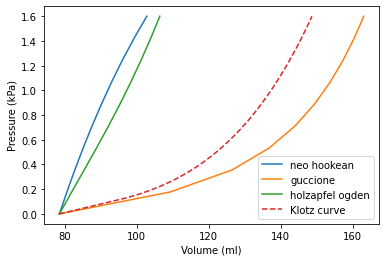

Klotz curve¶
Inlate a geometry to a pressure using different material models, and compare with the Klotz curve.
[1]:
import math
import matplotlib.pyplot as plt
import numpy as np
import pulse
try:
from dolfin_adjoint import Constant, DirichletBC
except ImportError:
from dolfin import Constant, DirichletBC
[2]:
geometry = pulse.HeartGeometry.from_file(pulse.mesh_paths["simple_ellipsoid"])
geometry.mesh.coordinates()[:] *= 3.15
ED_pressure = 1.6 # kPa
2021-05-11 20:22:52,305 - pulse.geometry_utils - INFO -
Load mesh from h5
[3]:
def setup_material(material_model):
"""
Choose parameters based on
Hadjicharalambous, Myrianthi, et al. "Analysis of passive
cardiac constitutive laws for parameter estimation using 3D
tagged MRI." Biomechanics and modeling in mechanobiology 14.4
(2015): 807-828.
These parameters did not really match the Klotz curve here.
Perhaps they did some more tuning?
"""
if material_model == "guccione":
matparams = pulse.Guccione.default_parameters()
matparams["C"] = 0.18 # kPa
matparams["bf"] = 27.75
matparams["bt"] = 5.37
matparams["bfs"] = 2.445
material = pulse.Guccione(
parameters=matparams, f0=geometry.f0, s0=geometry.s0, n0=geometry.n0
)
elif material_model == "neo_hookean":
matparams = pulse.NeoHookean.default_parameters()
matparams["mu"] = 10.0 # kPa
material = pulse.NeoHookean(parameters=matparams)
elif material_model == "holzapfel_ogden":
matparams = pulse.HolzapfelOgden.default_parameters()
matparams["a"] = 4.0 # kPa
matparams["a_f"] = 10.0 # kPa
matparams["b"] = 5.0
matparams["b_f"] = 5.0
material = pulse.HolzapfelOgden(
parameters=matparams, f0=geometry.f0, s0=geometry.s0, n0=geometry.n0
)
return material
[4]:
def klotz_curve():
"""
EDPVR based on Klotz curve
Klotz, Stefan, et al. "Single-beat estimation of end-diastolic
pressure-volume relationship: a novel method with potential for
noninvasive application." American Journal of Physiology-Heart and
Circulatory Physiology 291.1 (2006): H403-H412.
"""
# Some point at the EDPVR line
Vm = 148.663
Pm = ED_pressure
# Some constants
An = 27.8
Bn = 2.76
# kpa to mmhg
Pm = Pm * 760 / 101.325
V0 = Vm * (0.6 - 0.006 * Pm)
V30 = V0 + (Vm - V0) / (Pm / An) ** (1.0 / Bn)
beta = math.log(Pm / 30.0) / math.log(Vm / V30)
alpha = 30.0 / V30 ** beta
# Unloaded volume (not used here)
# P_V0 = alpha * V0 ** beta
vs = [V0]
ps = [0.0]
for p in np.linspace(1.0, 12.0):
vi = (p / alpha) ** (1.0 / beta)
vs.append(vi)
ps.append(p * 101.325 / 760) # Convert from mmhg to kPa
return vs, ps
[5]:
def fix_basal_plane(W):
V = W if W.sub(0).num_sub_spaces() == 0 else W.sub(0)
bc = DirichletBC(
V, Constant((0.0, 0.0, 0.0)), geometry.ffun, geometry.markers["BASE"][0]
)
return bc
dirichlet_bc = [fix_basal_plane]
lvp = Constant(0.0)
lv_marker = geometry.markers["ENDO"][0]
lv_pressure = pulse.NeumannBC(traction=lvp, marker=lv_marker, name="lv")
neumann_bc = [lv_pressure]
bcs = pulse.BoundaryConditions(dirichlet=dirichlet_bc, neumann=neumann_bc)
fig, ax = plt.subplots()
for material_model in ["neo_hookean", "guccione", "holzapfel_ogden"]:
material = setup_material(material_model)
problem = pulse.MechanicsProblem(geometry, material, bcs)
pressures = [0.0]
volumes = [geometry.cavity_volume()]
for p in np.linspace(0, ED_pressure, 10)[1:]:
pulse.iterate.iterate(problem, lvp, p)
pressures.append(p)
volumes.append(geometry.cavity_volume(u=problem.state.split()[0]))
ax.plot(volumes, pressures, label=" ".join(material_model.split("_")))
# Reset pressure
lvp.assign(Constant(0.0))
vs, ps = klotz_curve()
ax.plot(vs, ps, linestyle="--", label="Klotz curve")
ax.legend(loc="best")
ax.set_xlabel("Volume (ml)")
ax.set_ylabel("Pressure (kPa)")
plt.show()
#plt.savefig("klotz_curve.png")
2021-05-11 20:23:20,873 - pulse.iterate - INFO - Iterating....
2021-05-11 20:23:20,874 - pulse.iterate - INFO - Current control: 0.000
2021-05-11 20:23:20,875 - pulse.iterate - INFO - Target: 0.178
2021-05-11 20:23:31,082 - pulse.iterate - INFO - Iterating....
2021-05-11 20:23:31,083 - pulse.iterate - INFO - Current control: 0.178
2021-05-11 20:23:31,084 - pulse.iterate - INFO - Target: 0.356
2021-05-11 20:23:32,672 - pulse.iterate - INFO - Iterating....
2021-05-11 20:23:32,673 - pulse.iterate - INFO - Current control: 0.356
2021-05-11 20:23:32,673 - pulse.iterate - INFO - Target: 0.533
2021-05-11 20:23:34,201 - pulse.iterate - INFO - Iterating....
2021-05-11 20:23:34,202 - pulse.iterate - INFO - Current control: 0.533
2021-05-11 20:23:34,202 - pulse.iterate - INFO - Target: 0.711
2021-05-11 20:23:35,736 - pulse.iterate - INFO - Iterating....
2021-05-11 20:23:35,736 - pulse.iterate - INFO - Current control: 0.711
2021-05-11 20:23:35,737 - pulse.iterate - INFO - Target: 0.889
2021-05-11 20:23:37,405 - pulse.iterate - INFO - Iterating....
2021-05-11 20:23:37,406 - pulse.iterate - INFO - Current control: 0.889
2021-05-11 20:23:37,406 - pulse.iterate - INFO - Target: 1.067
2021-05-11 20:23:39,078 - pulse.iterate - INFO - Iterating....
2021-05-11 20:23:39,079 - pulse.iterate - INFO - Current control: 1.067
2021-05-11 20:23:39,079 - pulse.iterate - INFO - Target: 1.244
2021-05-11 20:23:40,780 - pulse.iterate - INFO - Iterating....
2021-05-11 20:23:40,781 - pulse.iterate - INFO - Current control: 1.244
2021-05-11 20:23:40,782 - pulse.iterate - INFO - Target: 1.422
2021-05-11 20:23:42,459 - pulse.iterate - INFO - Iterating....
2021-05-11 20:23:42,460 - pulse.iterate - INFO - Current control: 1.422
2021-05-11 20:23:42,460 - pulse.iterate - INFO - Target: 1.600
2021-05-11 20:23:44,213 - pulse.iterate - INFO - Iterating....
2021-05-11 20:23:44,214 - pulse.iterate - INFO - Current control: 0.000
2021-05-11 20:23:44,215 - pulse.iterate - INFO - Target: 0.178
2021-05-11 20:24:01,428 - pulse.iterate - INFO - Iterating....
2021-05-11 20:24:01,430 - pulse.iterate - INFO - Current control: 0.178
2021-05-11 20:24:01,430 - pulse.iterate - INFO - Target: 0.356
2021-05-11 20:24:04,798 - pulse.iterate - INFO - Iterating....
2021-05-11 20:24:04,798 - pulse.iterate - INFO - Current control: 0.356
2021-05-11 20:24:04,799 - pulse.iterate - INFO - Target: 0.533
2021-05-11 20:24:08,041 - pulse.iterate - INFO - Iterating....
2021-05-11 20:24:08,041 - pulse.iterate - INFO - Current control: 0.533
2021-05-11 20:24:08,042 - pulse.iterate - INFO - Target: 0.711
2021-05-11 20:24:11,123 - pulse.iterate - INFO - Iterating....
2021-05-11 20:24:11,123 - pulse.iterate - INFO - Current control: 0.711
2021-05-11 20:24:11,124 - pulse.iterate - INFO - Target: 0.889
2021-05-11 20:24:13,914 - pulse.iterate - INFO - Iterating....
2021-05-11 20:24:13,915 - pulse.iterate - INFO - Current control: 0.889
2021-05-11 20:24:13,916 - pulse.iterate - INFO - Target: 1.067
2021-05-11 20:24:16,813 - pulse.iterate - INFO - Iterating....
2021-05-11 20:24:16,814 - pulse.iterate - INFO - Current control: 1.067
2021-05-11 20:24:16,814 - pulse.iterate - INFO - Target: 1.244
2021-05-11 20:24:19,719 - pulse.iterate - INFO - Iterating....
2021-05-11 20:24:19,719 - pulse.iterate - INFO - Current control: 1.244
2021-05-11 20:24:19,720 - pulse.iterate - INFO - Target: 1.422
2021-05-11 20:24:22,558 - pulse.iterate - INFO - Iterating....
2021-05-11 20:24:22,558 - pulse.iterate - INFO - Current control: 1.422
2021-05-11 20:24:22,559 - pulse.iterate - INFO - Target: 1.600
2021-05-11 20:24:25,465 - pulse.iterate - INFO - Iterating....
2021-05-11 20:24:25,466 - pulse.iterate - INFO - Current control: 0.000
2021-05-11 20:24:25,466 - pulse.iterate - INFO - Target: 0.178
2021-05-11 20:25:07,017 - pulse.iterate - INFO - Iterating....
2021-05-11 20:25:07,018 - pulse.iterate - INFO - Current control: 0.178
2021-05-11 20:25:07,019 - pulse.iterate - INFO - Target: 0.356
2021-05-11 20:25:09,760 - pulse.iterate - INFO - Iterating....
2021-05-11 20:25:09,761 - pulse.iterate - INFO - Current control: 0.356
2021-05-11 20:25:09,761 - pulse.iterate - INFO - Target: 0.533
2021-05-11 20:25:12,447 - pulse.iterate - INFO - Iterating....
2021-05-11 20:25:12,448 - pulse.iterate - INFO - Current control: 0.533
2021-05-11 20:25:12,448 - pulse.iterate - INFO - Target: 0.711
2021-05-11 20:25:15,314 - pulse.iterate - INFO - Iterating....
2021-05-11 20:25:15,315 - pulse.iterate - INFO - Current control: 0.711
2021-05-11 20:25:15,315 - pulse.iterate - INFO - Target: 0.889
2021-05-11 20:25:18,277 - pulse.iterate - INFO - Iterating....
2021-05-11 20:25:18,277 - pulse.iterate - INFO - Current control: 0.889
2021-05-11 20:25:18,278 - pulse.iterate - INFO - Target: 1.067
2021-05-11 20:25:21,187 - pulse.iterate - INFO - Iterating....
2021-05-11 20:25:21,188 - pulse.iterate - INFO - Current control: 1.067
2021-05-11 20:25:21,189 - pulse.iterate - INFO - Target: 1.244
2021-05-11 20:25:24,083 - pulse.iterate - INFO - Iterating....
2021-05-11 20:25:24,083 - pulse.iterate - INFO - Current control: 1.244
2021-05-11 20:25:24,084 - pulse.iterate - INFO - Target: 1.422
2021-05-11 20:25:26,934 - pulse.iterate - INFO - Iterating....
2021-05-11 20:25:26,934 - pulse.iterate - INFO - Current control: 1.422
2021-05-11 20:25:26,935 - pulse.iterate - INFO - Target: 1.600
